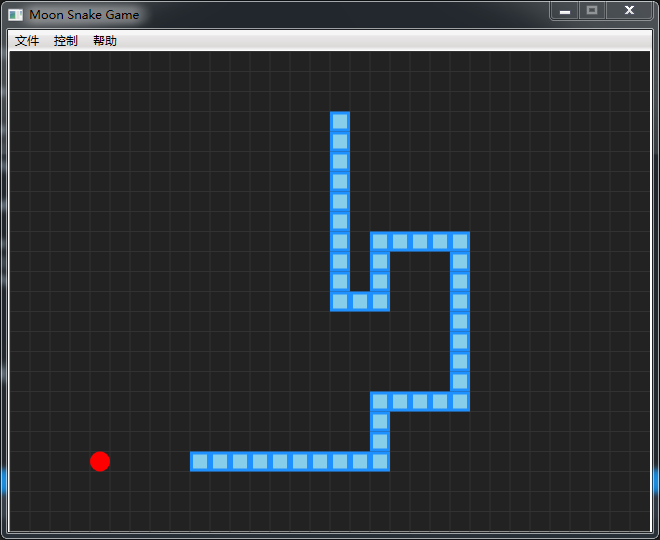

八、生成新的单节蛇身
我们这里先说说游戏小原理好了，游戏运行后，通过计时器事件不断生成新的单节蛇身类SnakeNode，添加到List中的0位置，原来的蛇头变成了第二节。该节新蛇头的坐标通过蛇头前进方向Direct进行判断，即如果原蛇头往左运行，则新蛇头在原蛇头位置的左一格生成，其他方向以此类推。最后将该节添加到SnakeNodes列表中，并将相应图形添加到游戏区。
private void GenNewSnakeNode()
{
SnakeNode snakeNode = null;
switch (Direct)
{
case Direction.UP:
snakeNode = new SnakeNode(new Point(SnakeNodes[SnakeHead]._pos.X,
SnakeNodes[SnakeHead]._pos.Y - 1));
break;
case Direction.DOWN:
snakeNode = new SnakeNode(new Point(SnakeNodes[SnakeHead]._pos.X,
SnakeNodes[SnakeHead]._pos.Y + 1));
break;
case Direction.LEFT:
snakeNode = new SnakeNode(new Point(SnakeNodes[SnakeHead]._pos.X - 1,
SnakeNodes[SnakeHead]._pos.Y));
break;
case Direction.RIGHT:
snakeNode = new SnakeNode(new Point(SnakeNodes[SnakeHead]._pos.X + 1,
SnakeNodes[SnakeHead]._pos.Y));
break;
}
if (snakeNode != null)
{
SnakeNodes.Insert(0, snakeNode);
myCanvas.Children.Add(SnakeNodes[0]._rect);
}
}
九、随机水果位置
注意该新位置不得与蛇身任何一节重叠，如果重叠则另外生成新位置，直到成功为止。
private Point SetFruitToRandomPos()
{
bool flag = true;
Point pos = new Point();
while (flag)
{
flag = false;
pos = new Point(rnd.Next(0, CellWidth), rnd.Next(0, CellHeight));
foreach (var node in SnakeNodes)
{
if (pos.X == node._pos.X && pos.Y == node._pos.Y)
{
flag = true;
break;
}
}
}
return pos;
}
十、碰撞检测（蛇头与水果）
因为只有蛇头会最先触碰到水果，所以只需判断蛇头坐标与水果坐标是否相同即可。如果撞到水果，则将水果随机生成新位置；如果没有碰到，则删除蛇尾一节（因为之后会通过计时器会生成新一节蛇头，这样就会保存蛇身长度，感觉位置前进了一格）。
private void CheckCollision()
{
if (SnakeNodes[SnakeHead]._pos.X == fruit._pos.X && SnakeNodes[SnakeHead]._pos.Y == fruit._pos.Y)
{
fruit.SetPostion(SetFruitToRandomPos());
}
else
{
if (myCanvas.Children.Contains(SnakeNodes[SnakeNodes.Count - 1]._rect))
myCanvas.Children.Remove(SnakeNodes[SnakeNodes.Count - 1]._rect);
SnakeNodes.RemoveAt(SnakeNodes.Count - 1);
}
}
十一、判断是否游戏结束
很简单，看看蛇头是否触碰游戏区四边或蛇身的任何一节，如果是则返回true。
注意蛇身循环是从1开始的，如果从0开始你知道会出现什么情况。
private bool IsGameOver()
{
if (SnakeNodes[SnakeHead]._pos.X == -1 || SnakeNodes[SnakeHead]._pos.X == CellWidth
|| SnakeNodes[SnakeHead]._pos.Y == -1 || SnakeNodes[SnakeHead]._pos.Y == CellHeight)
{
return true;
}
foreach (var node in SnakeNodes)
{
if (node == SnakeNodes[SnakeHead])
continue;
if (node._pos.X == SnakeNodes[SnakeHead]._pos.X && node._pos.Y == SnakeNodes[SnakeHead]._pos.Y)
{
return true;
}
}
return false;
}
十三、删除游戏区的所有蛇身节
这个会在重新开始游戏时使用到：
private void RemoveSnakeNodeAll()
{
for (int i = 0; i < SnakeNodes.Count; i++)
{
if (myCanvas.Children.Contains(SnakeNodes[i]._rect))
{
myCanvas.Children.Remove(SnakeNodes[i]._rect);
}
}
}
顺便再来一发删除游戏区的水果：
private void RemoveFruit()
{
if (fruit == null)
{
return;
}
if (myCanvas.Children.Contains(fruit._ellipse))
{
myCanvas.Children.Remove(fruit._ellipse);
}
}
十四、按键操作
通过方向键，设置Direct值即可。
private void MyCanvas_PreviewKeyDown(object sender, KeyEventArgs e)
{
switch (e.Key)
{
case Key.Left:
if (Direct != Direction.RIGHT)
{
Direct = Direction.LEFT;
}
break;
case Key.Right:
if (Direct != Direction.LEFT)
{
Direct = Direction.RIGHT;
}
break;
case Key.Up:
if (Direct != Direction.DOWN)
{
Direct = Direction.UP;
}
break;
case Key.Down:
if (Direct != Direction.UP)
{
Direct = Direction.DOWN;
}
break;
case Key.Escape:
Application.Current.Shutdown();
break;
case Key.Space:
if (CurrGameState == GameState.NONE)
return;
if (CurrGameState == GameState.PAUSE)
{
CurrGameState = GameState.GAMEING;
timer.Start();
MenuControl_Pause.Header = "暂停";
}
else if (CurrGameState == GameState.GAMEING)
{
CurrGameState = GameState.PAUSE;
timer.Stop();
MenuControl_Pause.Header = "继续";
}
break;
}
}
十四、定义开始游戏方法
先删除界面中的蛇身和水果（保留底部暗格），随机位置生成水果和三节蛇身。
private void StartGame()
{
RemoveSnakeNodeAll();
RemoveFruit();
int startX = rnd.Next(5, CellWidth - 6);
int startY = rnd.Next(5, CellHeight - 6);
Direct = Direction.RIGHT;
fruit = new Fruit(SetFruitToRandomPos(), myCanvas);
SnakeNodes = new List<SnakeNode>();
SnakeNodes.Add(new SnakeNode(new Point(startX, startY)));
GenNewSnakeNode();
GenNewSnakeNode();
}
十五、开始游戏菜单
调用StartGame()方法，并设定计时器开始。
private void MenuFile_NewGame_Click(object sender, RoutedEventArgs e)
{
StartGame();
timer.Start();
CurrGameState = GameState.GAMEING;
MenuControl_Pause.Header = "暂停";
}
十六、暂停与继续
直接上代码，没有要说的了。
private void MenuControl_Pause_Click(object sender, RoutedEventArgs e)
{
if (CurrGameState == GameState.GAMEING)
{
CurrGameState = GameState.PAUSE;
timer.Stop();
MenuControl_Pause.Header = "继续";
}
else if (CurrGameState == GameState.PAUSE)
{
CurrGameState = GameState.GAMEING;
timer.Start();
MenuControl_Pause.Header = "暂停";
}
}
十七、退出游戏
private void MenuFile_Exit_Click(object sender, RoutedEventArgs e)
{
Application.Current.Shutdown();
}
十八、其他菜单功能
自己实现好了
private void MenuHelp_About_Click(object sender, RoutedEventArgs e)
{
}
[2019.12.23]更新：添加计时器事件代码（我不知道这个方法上次没有贴出来）
十九、计时器事件
/// <summary>
/// 计时器事件
/// </summary>
/// <param name="sender"></param>
/// <param name="e"></param>
private void Timer_Tick(object sender, EventArgs e)
{
CheckCollision();
GenNewSnakeNode();
if (IsGameOver())
{
CurrGameState = GameState.STOP;
timer.Stop();
MessageBox.Show("游戏结束", "警告", MessageBoxButton.OK);
return;
}
}